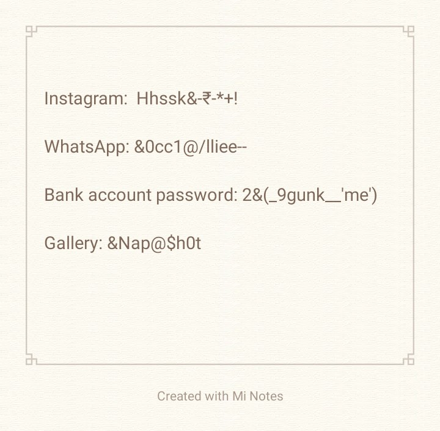

Blog Posts
Password Management
In today’s world of fast-paced technology,each and every person uses the internet and has a variety of social media apps.Because of this , cases of accounts or passwords getting hacked has become very common.In this article,we will discuss security precautions to take to manage the passwords.
Security precautions to manage the passwords
Don’t choose a weak password- Choosing a weak password is one of the common reasons behind this issue of hacking.Weaker the password,higher the chances of getting your account or password hacked.Birthday dates,(name)@123 and 12344321 are some common examples of weak passwords.
Different passwords for all the apps- One should never go for the same password for all the apps.Always choose different passwords for different apps and websites.A password should be specific to that particular app so that we can remember it and differentiate from the rest of the passwords.
For example:
soc1al$t0r|e& would be a perfect password for social media apps like facebook,instagram and snapchat.
$Nap{&h0t} would be a perfect password for the gallery app.
Making a list of passwords- Remembering different passwords for different apps can be a tough task.This task can be easily solved by making notes of all the passwords or writing it down in the form of a list on any paper.

Regularly changing the passwords- Having different and strong passwords is a great way of managing the passwords. But still there are great chances of getting hacked .This can be prevented by frequently changing the passwords.'Changing the passwords' here doesn’t mean completely replacing the previous password with the brand new one.Doing some minor changes in symbols or letters in the password can make a big difference.
Create a strong password- A strong password -
- have lots of different characters including-
- Uppercase letters- A,B,D,K,J,L,M,N,C,R,E
- Lowercase letters- a,b,f,n,r,i,e,l,f,g,m,x
- Numbers- 1,2,3,4,5,6,7,8,9,0
- Symbols- $#%^&*()@#_-+=:;\|
- is long
- have no relation with your personal information
- is not any dictionary word
Strong password examples-
- fb~p*w*rdAct. (Facebook account password)
- ins~p*w*rdAct. (Instagram account password)
- L1fe^{ph0tos} (password for Gallery app)
Two-Factor Authentication- Many password managers use two-factor authentication and send a code to your phone or an email with a code that you must enter to access an account. Even if a crook gets your password, they won’t be able to hack your accounts without the authentication code.(src: https://knowtechie.com/what-if-my-password-manager-gets-hacked/)